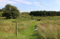
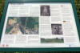
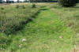
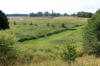
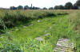
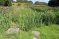
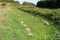

Risby
Wegstück


Risby
Navidaten: 55.13318 11.92795 oder: Risbyvej 2A, 4750 Lundby
Bei meinem letzten Besuch der Örtlichkeit am 31.08.2016 konnte ich diese Fotos aufnehmen:
      


Bei Risby, zwischen Præstø und Næstved, stießen die Grundbesitzer, Verner Grebart und Arnold Petersen, bei der Feldbearbeitung in dem Wiesen- und Moorgebiet immer wieder auf große Steine.
Sie markierten die Steine, und es zeigten sich mit der Zeit zwei parallele Reihen, Richtung Risby Å. Eine Probegrabung im Jahre 1973 ergab, dass hier zumindest eine gut erhaltene Straße mit großen Bordsteinen verborgen lag.
Als die Pläne für die neue Autobahn vorgestellt wurden, stellte sich heraus, dass sich die neue Straße und sein historischer Vorgänger buchstäblich in die Quere kommen würden.
Man beschloss im Sommer 1975 die Alte Straße zu untersuchen und danach zu vernichten, zumal an der Stelle eine Autobahnzufahrt geplant war. Aber die Charakteristik der vielen Anlagen, die bei den Ausgrabungen nach und nach zum Vorschein kamen, führte dazu, dass die Autobahn verlegt wurde, und die Untersuchungen sich aufwändiger als erwartet gestalteten.
Die untersuchten alten Wegteile queren die Risby Å, sie läuft in der Verlängerung der Mogenstrup Å nach Osten und in den Præstø Fjord hinaus. Die Bachsenke ist breit und sumpfig. Risby wurde offenbar als Überquerungsstelle auserwählt, da sich hier ein Paar Sandbänke von einigen hundert Meter breit machten.
Der erste gefundene Weg, ein steinbelegtes Watt untersuchte man an der Ostseite der Risby Å, wobei man schnell feststellte, das die Straße hier in ihrer kompletten Länge von 36 m, außer einem umgekippten Bordstein, intakt war. Es wurde beschlossen die ganze Straßenanlage auf dieser Seite des Baches als Naturschutzgebiet auszuweisen. Der Straßenteil auf der anderen Seite des Baches war durch die jahrhundertelange Feldarbeit leider teilweise arg zerstört.
Neben und unter dieser Steinstraße wurde eine ältere Holzstraße gefunden. Nach einer kurzen Untersuchung durch das Nationalmuseum und die Altertümerverwaltung im Jahre 1976 ergab sich, dass sich hier mehrere einzeln lokalisierte Straßen, eine steinbelegte Straße, ein Schwellenstraße, eine Holzbrücke und ca. 30 Reisigstraßen verbargen.
Nicht alle Straßen konnten datiert werden, und die Bachsenken verbergen vermutlich heute noch einige weitere Straßen.
Die Entstehung der obersten Straße steht in Zusammenhang mit dem Gebrauch von Rädern und Wagen, die ältesten Straßen von Risby sind aus der jüngeren Steinzeit.
Die einfachen Straßen aus Zweigen und Reisig, welches quer über das sumpfiges Gebiet in Fahrtrichtung ausgelegt worden ist, wurden oft mit Sand und Kies aufgefüllt, um die Straße zu stabilisieren. Zu keiner Zeit konnte man trockenen Fußes die Bachsenke überqueren, aber die Wagen und Arbeitstiere sanken hier nicht ein. Dieser Straßentyp wurde vom Bachstrom sehr beeinflusst und auch relativ schnell wieder unbrauchbar. Die Straßen wurden repariert, indem man weitere Zweige und mehr Sand/Kies aufgebracht hat, oder eine neue Straße wurde einfach nebenan gebaut.
Außer dieser steinzeitlichen Straße fand man weitere Zweigstraßen, die mittels der C 14-Datierung der jüngeren Bronzezeit (ca. 810 v. Ch.), bzw. der germanische Eisenzeit. (ca. 700) zuzurechnen sind. Die jüngsten Zweigstraßen sind oft mit längs angebrachten Zweigen und Stämme stabilisiert, die wiederum mit senkrecht angebrachten Ästen fixiert wurden.
Mit der Eisenzeit kam ein anderen Straßenbelag auf - die Steinbelegte Straße.
Die tiefgelegenen sind noch nicht datiert, aber man glaubt, dass sie aus der älteren Eisenzeit sind. Hier sind zwei Straßen aufeinander gelegt. Die unterst gelegene Straße ist knapp 4 m breit und die Seiten sind mit Bordsteinen eingefasst. Die Straße besteht aus 4 - 5 Schichten handgroßer Steine, mit einem Fundament aus Zweigen.
Die Breite ist gleichbleibend und die Seiten sind mit großen Steinen markiert, nur die Steine für den Belag sind große flache Feldsteine. Die zwei Steinstraßen sind ungefähr 30 m lang. Man hat sie mit Stahlspeeren lokalisiert, aber es ist ungenau weil sie an der Ostseite vom Bach teilweise unter einer Steinmauer liegen.
Die zuerst gefundene Steinstraße bei Risby wurde zur Wikingerzeit angelegt, ein Reihe von C 14-Datierungen weist sie um das Jahr 1000. An der Ostseite des Baches ist diese Straße ganz ausgegraben worden und weist ein Länge von ca. 70 m auf.
Die Fahrbahn ist 2,5 m breit und die Seiten sind mit großen Bordsteinen abgegrenzt, alle mit dem Größten Maß in Fahrtrichtung. An der Ostseite des Baches beinhalten die zwei Reihen Bordsteine 54 und 46 Steine. Diese sind zum Teil oben auf der Fahrbahn angebracht, welche 40 cm dick ist, dicht gepackt von 3-5 Schichten handgroßer Steine, hauptsächlich aus Feuerstein.
Das Fundament der Fahrbahn und der Bordsteine bestand aus einer Holzschicht aus abgehackten Zweigen und teils aus zugehauenen Stämmen (teilweise Eiche). Die Fahrbahn folgte der Oberfläche des Moores, weshalb die Straße nach dem heutigen Flusslauf abfällt. Das ursprüngliche Watt liegt unmittelbar westlich davon.
Die Steine der Fahrbahn waren mit bis zu 15 cm Sand abgedeckt, und es zeigten sich deutliche Spuren von Verkehr. Nachdem man den Weg gesäubert hatte, sah man deutliche Radspuren, zwei parallele, bis zu 5 cm tiefe Furchen mit einem Abstand zwischen 1,2 1,3 m. Der Sand und die Steinlagen dienten dazu, das die Wägen nicht zu sehr holperten, obwohl das überqueren des Watts nicht ganz unproblematisch war.
Ca. 5 m vor dem Ende der Straße in Osten, fehlten in einer Länge von über 4,5 m die Bordsteine. Die Ausgrabungen zeigten das die Straße an dieser Stelle einen teilweise zugewachsenen Flusslauf überqueren musste, weshalb man hier einen Schwellenweg angelegt hat.
Der Schwellenweg bestand aus einem 4,5 x 2,6 m großen Fach aus Eichenholz. Die mittleren Balken waren fast verfault, aber man sah sie als dunkle Markierungen. Einzelne erhaltene Balken zeigen deutliche Jahresringe. Von den äußersten Balken war ein Viertel weggeschlagen, darauf lagen die Balken, die die Fahrbahn bildeten und waren mit einer schützenden Schicht aus Sand bedeckt.
Der Bereich unter dem Schwellenweg zeigt wie die Brückenbefestigung angelegt war. Der sich anschließende Steinweg wurde von quer liegenden Stämmen gehalten. Der Schwellenweg ruhte auf 5 großen Steinen und diese wiederum auf einer meterdicken Schicht aus Holzabfällen. Man hat den ganzen sumpfigen Bachlauf mit alles was man hatte aufgefüllt: Holzspäne, Zweige, Stämme, defekte Räder und defekte Wagenachsen.
Ein metergroßer Stein, der zentrale Trägerstein des Schwellenweges, wurde mit einer Art Schlitten auf seinen Platz gezogen und dieser blieb unter dem Stein liegen, da er unmöglich unter dem über 700 kg schweren Stein wieder entfernt werden konnte. Nachdem alle die Steine auf ihrem Platz lagen, wurde der Schwellenweg angelegt.
Während der Ausgrabungen tauchten unter dem nördlichen Bereich der Schwellenstraße und der dazugehörigen Bordsteinreihen auch etliche Eichenpfosten auf. Diese wurden als Bestandteile einer älteren Brückenkonstruktion gedeutet, die zum Zeitpunkt der Erbauung der Wikingerstraße wohl bereits baufällig war. Die Pfosten standen Paarweise im Abstand von 2,5 m auseinander. Sie waren viereckig behauen mit 20-30 cm Kantenlänge, bis zu 2 m lang und unten zugespitzt. Zwischen den Pfosten fanden sich sehr viele Reste der ehemaligen Brückenfahrbahn.
Der entsprechende Eintrag zu dem Wegstück in "Fund og Fortidsminder" ist hier verlinkt.
Über diesen Link findet sich ausführliche Infos (in dänischer Sprache) und einige Fotos.
Jørgensen, Mogens Schou: Oldtidsvejen ved Risby. Historisk Samfund for Præstø Amt, Årbog 1976, s. 7-33.
Dieser Artikel (in dänischer Sprache) mit zahlreichen s-w Bildern kann hier abgerufen werden.